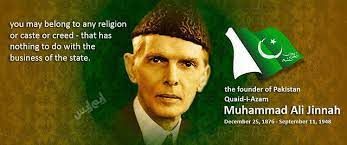
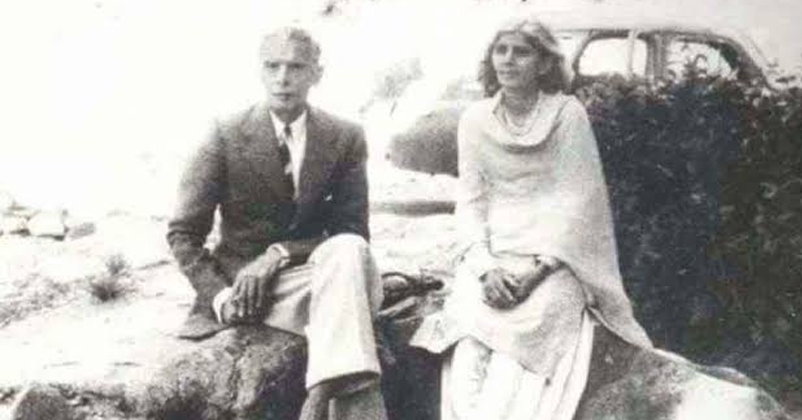
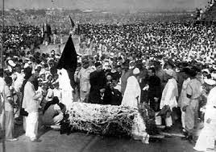

BACKGROUND TO INDEPENDENCE
Until the late 1930s, most Muslims of the British Raj expected, upon independence, to be part of a unitary state encompassing all of British India, as did the Hindus and others who advocated self-government.[98] Despite this, other nationalist proposals were being made. In a speech given at Allahabad to a League session in 1930, Sir Muhammad Iqbal called for a state for Muslims in British India. Choudhary Rahmat Ali published a pamphlet in 1933 advocating a state "Pakistan" in the Indus Valley, with other names given to Muslim-majority areas elsewhere in India.[99] Jinnah and Iqbal corresponded in 1936 and 1937; in subsequent years, Jinnah credited Iqbal as his mentor, and used Iqbal's imagery and rhetoric in his speeches.[100]
Although many leaders of the Congress sought a strong central government for an Indian state, some Muslim politicians, including Jinnah, were unwilling to accept this without powerful protections for their community.[98] Other Muslims supported the Congress, which officially advocated a secular state upon independence, though the traditionalist wing (including politicians such as Madan Mohan Malaviya and Vallabhbhai Patel) believed that an independent India should enact laws such as banning the killing of cows and making Hindi a national language. The failure of the Congress leadership to disavow Hindu communalists worried Congress-supporting Muslims. Nevertheless, the Congress enjoyed considerable Muslim support up to about 1937.[101]
Events which separated the communities included the failed attempt to form a coalition government including the Congress and the League in the United Provinces following the 1937 election.[102] According to historian Ian Talbot, "The provincial Congress governments made no effort to understand and respect their Muslim populations' cultural and religious sensibilities. The Muslim League's claims that it alone could safeguard Muslim interests thus received a major boost. Significantly it was only after this period of Congress rule that it [the League] took up the demand for a Pakistan state ..."[91]
Balraj Puri in his journal article about Jinnah suggests that the Muslim League president, after the 1937 vote, turned

IQBAL INFLUENCE ON JINNAH
The well documented influence of Iqbal on Jinnah, with regard to taking the lead in creating Pakistan, has been described as "significant", "powerful" and even "unquestionable" by scholars.[107][108][109] Iqbal has also been cited as an influential force in convincing Jinnah to end his self-imposed exile in London and re-enter the politics of India.[110] Initially, however, Iqbal and Jinnah were opponents, as Iqbal believed Jinnah did not care about the crises confronting the Muslim community during the British Raj. According to Akbar S. Ahmed, this began to change during Iqbal's final years prior to his death in 1938. Iqbal gradually succeeded in converting Jinnah over to his view, who eventually accepted Iqbal as his "mentor". Ahmed comments that in his annotations to Iqbal's letters, Jinnah expressed solidarity with Iqbal's view: that Indian Muslims required a separate homeland.[111]
Iqbal's influence also gave Jinnah a deeper appreciation for Muslim identity.[112] The evidence of this influence began to be revealed from 1937 onwards. Jinnah not only began to echo Iqbal in his speeches, he started using Islamic symbolism and began directing his addresses to the underprivileged. Ahmed noted a change in Jinnah's words: while he still advocated freedom of religion and protection of the minorities, the model he was now aspiring to was that of the Prophet Muhammad, rather than that of a secular politician. Ahmed further avers that those scholars who have painted the later Jinnah as secular have misread his speeches which, he argues, must be read in the context of Islamic history and culture. Accordingly, Jinnah's imagery of the Pakistan began to become clear that it was to have an Islamic nature. This change has been seen to last for the rest of Jinnah's life. He continued to borrow ideas "directly from Iqbal—including his thoughts on Muslim unity, on Islamic ideals of liberty, justice and equality, on economics, and even on practices such as prayers".[113][114]
In a speech in 1940, two years after the death of Iqbal, Jinnah expressed his preference for implementing Iqbal's vision

ILLNESS AND DEATH
From the 1930s, Jinnah suffered from tuberculosis; only his sister and a few others close to him were aware of his condition. Jinnah believed public knowledge of his lung ailments would hurt him politically. In a 1938 letter, he wrote to a supporter that "you must have read in the papers how during my tours ... I suffered, which was not because there was anything wrong with me, but the irregularities [of the schedule] and over-strain told upon my health".[194][195] Many years later, Mountbatten stated that if he had known Jinnah was so physically ill, he would have stalled, hoping Jinnah's death would avert partition.[196] Fatima Jinnah later wrote, "even in his hour of triumph, the Quaid-e-Azam was gravely ill ... He worked in a frenzy to consolidate Pakistan. And, of course, he totally neglected his health ..."[197] Jinnah worked with a tin of Craven "A" cigarettes at his desk, of which he had smoked 50 or more a day for the previous 30 years, as well as a box of Cuban cigars. As his health got worse, he took longer and longer rest breaks in the private wing of Government House in Karachi, where only he, Fatima and the servants were allowed.[198]
In June 1948, he and Fatima flew to Quetta, in the mountains of Balochistan, where the weather was cooler than in Karachi. He could not completely rest there, addressing the officers at the Command and Staff College saying, "you, along with the other Forces of Pakistan, are the custodians of the life, property and honour of the people of Pakistan."[199] He returned to Karachi for the 1 July opening ceremony for the State Bank of Pakistan, at which he spoke. A reception by the Canadian trade commissioner that evening in honour of Dominion Day was the last public event he attended.[200]
Jinnah and his sister Fatima Jinnah's wax statues at the museum in the Pakistan Monument, Islamabad
On 6 July 1948, Jinnah returned to Quetta, but at the advice of doctors, soon journeyed to an even higher retreat at Ziarat. Jinnah had always been reluctant to undergo medical treatment but realising his condition was getting worse, the Pakistani government sent the best doctors it could find to treat him. Tests confirmed tuberculosis, and also showed evidence of advanced lung cancer. He was treated with the new "miracle drug" of streptomycin, but it did not help. Jinnah's condition continued to deteriorate despite the Eid prayers of his people. He was moved to the lower altitude of Quetta on 13 August, the eve of Independence Day, for which a ghost-written statement for him was released. Despite an increase in appetite (he then weighed just over 36 kilograms or 79 pounds), it was clear to his doctors that if he was to return to Karachi in life, he would have to do so very soon. Jinnah, however, was reluctant to go, not wishing his aides to see him as an invalid on a stretcher.[201]
By 9 September, Jinnah had also developed pneumonia. Doctors urged him to return to Karachi, where he could receive better care, and with his agreement, he was flown there on the morning of 11 September. Dr Ilahi Bux, his personal physician, believed that Jinnah's change of mind was caused by foreknowledge of death. The plane landed at Karachi that afternoon, to be met by Jinnah's limousine, and an ambulance into which Jinnah's stretcher was placed. The ambulance broke down on the road into town, and the Governor-General and those with him waited for another to arrive; he could not be placed in the car as he could not sit up. They waited by the roadside in oppressive heat as trucks and buses passed by, unsuitable for transporting the dying man and with their occupants not knowing of Jinnah's presence. After an hour, the replacement ambulance came, and transported Jinnah to Government House, arriving there over two hours after the landing. Jinnah died later that night at 10:20 pm at his home in Karachi on 11 September 1948 at the age of 71, just over a year after Pakistan's creation.[202][203]
Indian Prime Minister Jawaharlal Nehru stated upon Jinnah's death, "How shall we judge him? I have been very angry with hi

go to main page
for more